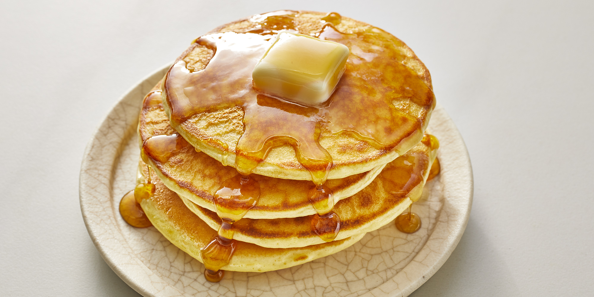

Good Old Fashioned Pancakes

This is a great recipe that I found in my Grandma's recipe book. Judging from the weathered look of this recipe card, this was a family favorite.
Everybody loves pancakes in my house. Special occasion days, Sundays, Tuesday evenings and in fact any day ending in a 'Y'!
So we all need a simple, quick and delicious way to have pancakes when the maple syrup is ready to pour! This recipe will give you all that and more, so that you are ready to sit down, tuck in and fight over the last one.
Ingredients:
- 1 ½ cups all-purpose flour
- 3 ½ teaspoons baking powder
- ¼ teaspoon salt, or more to taste
- 1 tablespoon white sugar
- 1 ¼ cups milk
- 1 egg
- 3 tablespoons butter, melted
Steps:
- In a large bowl, sift together the flour, baking powder, salt and sugar.
- Make a well in the center and pour in the milk, egg and melted butter; mix until smooth.
- Heat a lightly oiled griddle or frying pan over medium-high heat.
- Pour or scoop the batter onto the griddle, using approximately 1/4 cup for each pancake. Brown on both sides and serve hot.